Fourier Transform¶
The 1D Fourier transform is:
(1)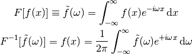
To show that it works:
(2)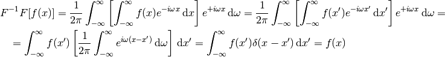
If  is time (unit ), then
is time (unit ), then  is angular frequency (unit
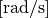). One can express the Fourier transform in terms of
ordinary frequency
is angular frequency (unit
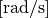). One can express the Fourier transform in terms of
ordinary frequency  (unit 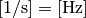) by
substituting 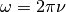:
(unit 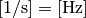) by
substituting 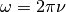:
(3)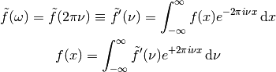
Both transformations are equivalent, one only has to be careful whether one is
dealing with the transform as a function of or , the conversion
being given by 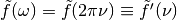.
Third convention that is frequently used is:
(4)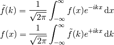
The 3D Fourier transform is:
(5)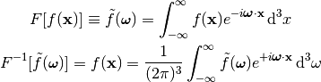
With obvious analogs for other conventions and dimensions.
The sign convention in the exponentials  is arbitrary, one
can as well flip the sign of the direct and inverse transforms. In particular,
one often uses both sign conventions in the same equation. Consider a spacetime
plane-wave 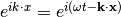. Then
we obtain (using plus sign convention in the 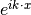 exponential for
the direct transformation):
is arbitrary, one
can as well flip the sign of the direct and inverse transforms. In particular,
one often uses both sign conventions in the same equation. Consider a spacetime
plane-wave 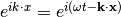. Then
we obtain (using plus sign convention in the 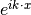 exponential for
the direct transformation):
(6)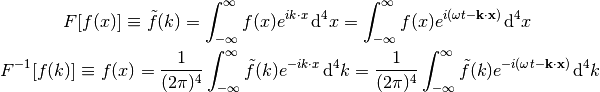
Finally, the equation 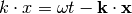 depends on the metric signature, in this case 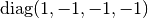. For a signature 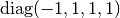 we would get 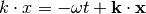.
Unlike the normalization convention, where one has to be very careful, the sign convention in Fourier transform is not a problem, one just has to remember to flip the sign for the inverse transform.
Discrete Fourier Transform¶
Starting from
(7)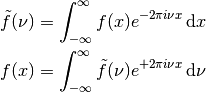
When the space is discrete, that is 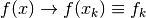, where
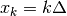 and 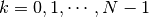, we obtain:
(8)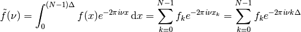
We only need to sample the reciprocal space at the intervals 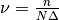 where 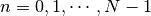. We finally get:
(9)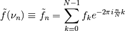
For the inverse transform, we obtain:
(10)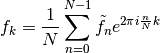
Laplace Transform¶
Laplace transform of  is:
is:
(11)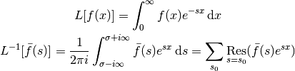
The contour integration is over the vertical line 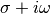 and  is chosen large enough so that all residues are to the left of the line (that’s
because the Laplace transform 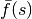 is only defined for
is chosen large enough so that all residues are to the left of the line (that’s
because the Laplace transform 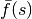 is only defined for  larger than
the residues, so we have to integrate in this range as well). It can be shown
that the integral over the left semicircle goes to zero:
larger than
the residues, so we have to integrate in this range as well). It can be shown
that the integral over the left semicircle goes to zero:
(12)![\left|\int_\Omega e^{sx}g(s) \d s \right|
=\left|\int_{\pi\over2}^{3\pi\over2} e^{(\sigma + Re^{i\varphi})x}
g(\sigma+Re^{i\varphi})iRe^{i\varphi}\d\varphi\right|
\le
\le R \max_\Omega |g(z)| e^{\sigma x}
\int_{\pi\over2}^{3\pi\over2}\left| e^{xRe^{i\varphi}}
\right|\d\varphi
=
= R \max_\Omega |g(z)| e^{\sigma x}
\int_{\pi\over2}^{3\pi\over2}e^{xR \cos \varphi} \d\varphi
=
= R \max_\Omega |g(z)| e^{\sigma x}
\int_0^{\pi}e^{-xR \sin \varphi} \d\varphi
=
< {\pi e^{\sigma x}\over x} \max_\Omega |g(z)|](../../_images/math/4a8097935cc530eeef3a35998c76507853f9e7c9.png)
so the complex integral is equal to the sum of all residues of 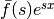 in the complex plane.
To show that it works:
(13)![L^{-1} L [f(x)]
=
{1\over2\pi i}\int_{\sigma-i\infty}^{\sigma+i\infty}
\left[\int_0^{\infty}
f(x) e^{-s x}\,\d x\right] e^{s x}\,\d s
=
{1\over2\pi i}\int_{\sigma-i\infty}^{\sigma+i\infty}
\left[\int_0^{\infty}
f(x') e^{-s x'}\,\d x'\right] e^{s x}\,\d s
=
=
\int_0^{\infty} f(x') \left[{1\over2\pi i}
\int_{\sigma-i\infty}^{\sigma+i\infty}
e^{s (x- x')}\,\d s \right] \,\d x'
=
\int_0^{\infty} f(x') \delta(x-x') \,\d x'
=f(x)](../../_images/math/e35a8957cafe2ab1c2039d94f29c8fd06596c54f.png)
where we used:
(14)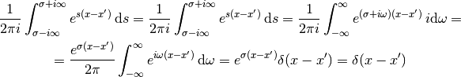
and it can be derived from the Fourier transform by transforming a function 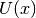:
(15)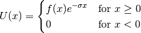
and making a substitution 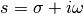:
(16)![L[f(x)] \equiv \bar f(s) = F[U(x)] \equiv \tilde U(\omega)
= \int_{-\infty}^{\infty} U(x) e^{-i\omega x}\,\d x
= \int_0^{\infty} f(x) e^{-\sigma x} e^{-i\omega x}\,\d x
= \int_0^{\infty} f(x) e^{-s x}\,\d x
L^{-1}[\bar f(s)] \equiv f(x) = U(x) e^{\sigma x}
= F^{-1}[\tilde U(\omega)]e^{\sigma x}
= F^{-1}[\bar f(s)]e^{\sigma x}
= F^{-1}[\bar f(\sigma+i\omega)e^{\sigma x}]
= {1\over2\pi}\int_{-\infty}^{\infty} \bar f(\sigma + i\omega)e^{\sigma x}
e^{i\omega x}\,\d \omega
= {1\over2\pi i}\int_{\sigma-i\infty}^{\sigma+i\infty}
\bar f(s) e^{s x}\,\d s
= \sum_{s_0} \res_{s=s_0} (\bar f(s) e^{s x})](../../_images/math/2be27d3ddb29bec572de95bb7e366faad0dc3748.png)
Where the bar (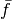) means the Laplace transform and tilde (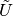) means the Fourier transform.